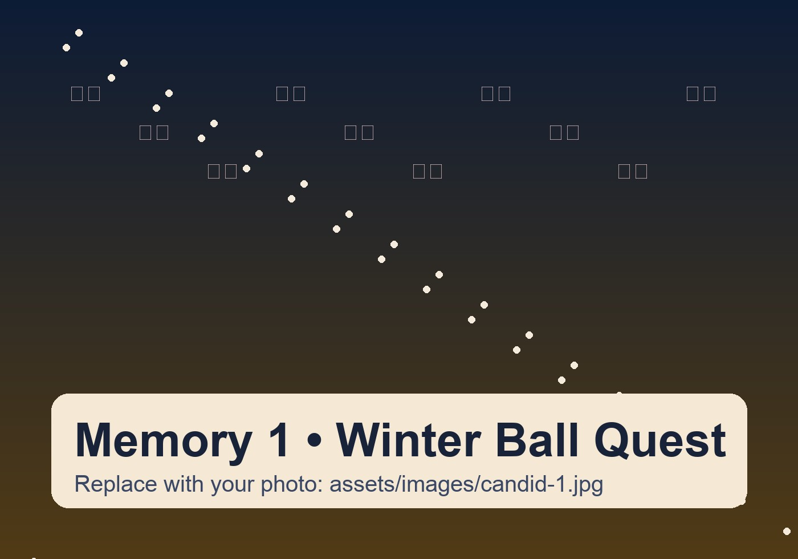
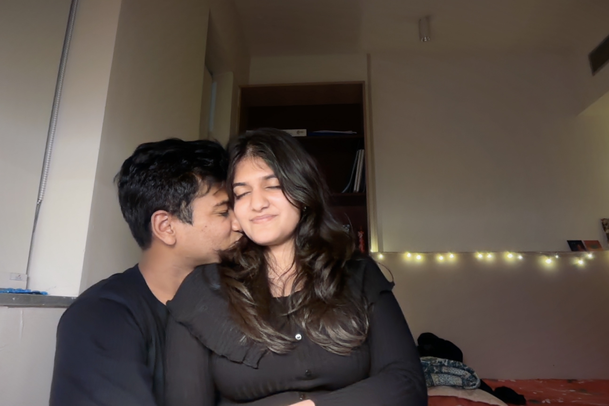

Winter Carnival Quest
0/5 levels cleared
A Winter Carnival Quest for Tanvi
Five levels. One dramatic finale. One very important question for Winter Ball at Ashoka University on 19 February 2026.
Every win unlocks another clue. Reach the last screen to reveal the final filmy moment.

